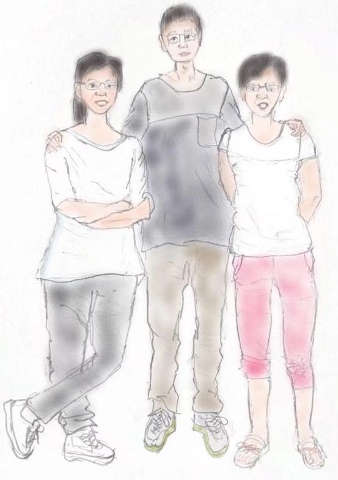

一蓑烟雨任平生
2014.1.8 点滴时光
2014.2.3 除夜
2014.2.22 爬玉阳山
2014.04.19 网络概览
2014.5.8 Learn From Facebook's Prospectus
2014.5.27 漫漫缉凶路
2025.1.3 Hyperbolic metric spaces and Stochastic Embedding
2025.1.3 Embeddings of Gromov Hyperbolic Space
